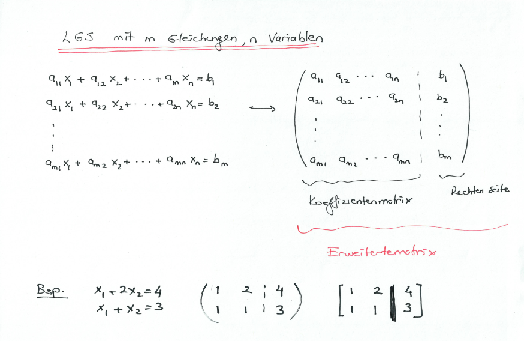

Linear Systems of Equations (LSE)

Definitions
n-tuple
The solution of a LSE is an n-tuple $(x_1, ..., x_n)$ of numbers that satisfy all $m$ equations of the system.
General solution
The set of solutions (Lösungsmenge) of the systems is called the general solution of the system.
equivalence
Two LSE are equivalent if they have the same set of solutions.
inconsistency
A LGS is inconsistent when it has no solution.
e.g. $$ x_1 + 2x_2 = 4 \\ 3x_1 + 6x_2 = 8 \\ $$
eindeutig loesbar
A LGS is eindeutig loesbar when is has exactly one solution.
e.g. $$ x_1 + 2x_2 = 4 \\ x_1 + x_2 = 3 \\ $$
mehrdeutig loesbar
A LGS is mehrdeutig loesbar when is has more than one solution.
e.g. $$ x_1 + 2x_2 = 4 \\ 2x_1 + 4x_2 = 8 \\ $$
${(4-2\alpha,\alpha)|\alpha \in \mathbb{R}}$
homogeneous / inhomogeneous
A SLE is homogeneous when the right side is all zeros. i.e. $b_1 = b_2 = ... = b_m = 0$ otherwise it is called inhomogeneous
note: A homogeneous LSE always has at least one solution $(x_1,x_2,...,x_n) = (0,0,...,0)$. This solution is called Nullloesung or trivial solution. All other solutions are called non trivial.
note: A homogeneous LSE is always solvable. Either eindeutig (only trivial solution) or mehrdeutig (trivial + non trivial solutions)